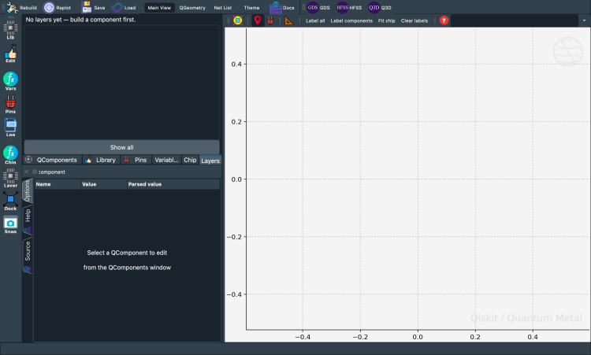
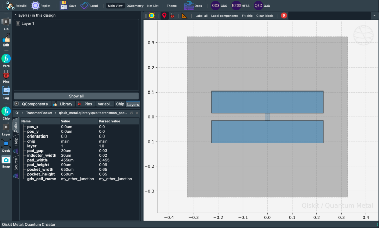
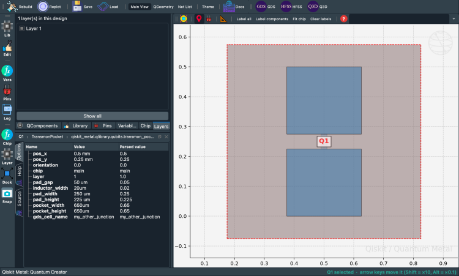
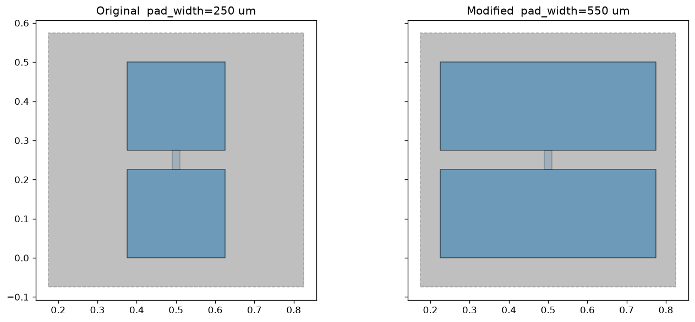
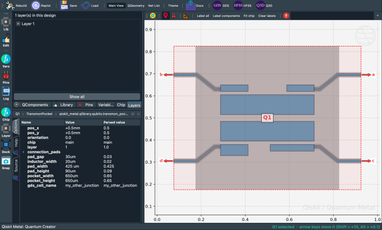

Learning path
Chip designer: step 1 of 10 · 1.3 → · all of this path
Open-source simulation: step 1 of 9 · 3.5 → · all of this path
Ansys EPR and LOM analyst: step 1 of 9 · 3.3 → · all of this path
Teaching: step 1 of 9 · 1.2 → · all of this path
Note
This page was generated from tut/1-Overview/1.1-Quick-start.ipynb.
1.1 Quick start¶


💡 Running in Colab or Binder? Skip the desktop GUI install — the cell below grabs the lite (no-Qt) wheel, and
qm.gui(design)auto-picks an inline matplotlib viewer with the same API (gui.rebuild(),gui.screenshot(),gui.edit_component(...)) as the desktopMetalGUI.
[1]:
# In Colab / Binder, uncomment to install Quantum Metal (lite, no Qt).
# Locally you should already have it via `pip install quantum-metal` or
# `pip install 'quantum-metal[gui]'` for the desktop GUI.
# !pip install -q quantum-metal
Import Quantum Metal¶
[2]:
import qiskit_metal as metal
import qiskit_metal as qm # alias used by qm.gui / qm.view
from qiskit_metal import designs, draw
from qiskit_metal import Dict, open_docs
%metal_heading Welcome to Quantum Metal!
Welcome to Quantum Metal!
My first Quantum Design (QDesign)¶
A QDesign is the canvas that holds your chip components. Start with the planar variant:
design = designs.DesignPlanar()
gui = qm.gui(design)
qm.gui(design) is a factory: it returns the desktop MetalGUI when you have PySide6 and a display, and an inline matplotlib viewer (MetalGUIHeadless) otherwise. The same gui.* API works in both.
Run the cells below to instantiate a design and view it. The chip starts empty — let’s add a qubit.
[3]:
design = designs.DesignPlanar()
gui = qm.gui(design) # Qt locally, inline matplotlib in Colab/Binder
# Dark theme for the desktop GUI screenshots below. Guarded because the
# inline headless viewer used on Colab/Binder has no stylesheet concept.
if hasattr(gui, "load_stylesheet"):
gui.load_stylesheet("metal_dark")
[4]:
gui.screenshot()

[5]:
%metal_heading Hello Quantum World!
Hello Quantum World!
My first QComponent — a transmon qubit¶
Quantum Metal ships a ready-made transmon in qiskit_metal.qlibrary.qubits.transmon_pocket. Adding one is a single line; the GUI refreshes automatically.
[6]:
# Select a QComponent to create (The QComponent is a python class named `TransmonPocket`)
from qiskit_metal.qlibrary.qubits.transmon_pocket import TransmonPocket
# Create a new qcomponent object with name 'Q1'
q1 = TransmonPocket(design, "Q1")
gui.rebuild() # rebuild the design and plot
[7]:
# save screenshot
gui.edit_component("Q1")
gui.autoscale()
gui.screenshot()

Inspect the component we just created:
[8]:
q1
[8]:
![Q1]()
Options
| option | value | parsed | description |
|---|---|---|---|
| pos_x | '0.0um' | 0.0 | The x/y position of the center of the QComponent. |
| pos_y | '0.0um' | 0.0 | The x/y position of the center of the QComponent. |
| orientation | '0.0' | 0.0 | The primary direction in degrees of the QComponent. Expressed counter-clockwise orientation. |
| chip | 'main' | 'main' | Chip holding the QComponent. |
| layer | '1' | 1.0 | Manufacturing layer used for the QComponent. |
| connection_pads | The dictionary which contains all active connection lines for the qubit. | ||
| pad_gap | '30um' | 0.03 | The distance between the two charge islands, which is also the resulting 'length' of the pseudo junction |
| inductor_width | '20um' | 0.02 | Width of the pseudo junction between the two charge islands (if in doubt, make the same as pad_gap). Really just for simulating in HFSS / other EM software |
| pad_width | '455um' | 0.455 | The width (x-axis) of the charge island pads |
| pad_height | '90um' | 0.09 | The size (y-axis) of the charge island pads |
| pocket_width | '650um' | 0.65 | Size of the pocket (cut out in ground) along x-axis |
| pocket_height | '650um' | 0.65 | Size of the pocket (cut out in ground) along y-axis |
| gds_cell_name | 'my_other_junction' | 'my_other_junction' | Cell of the junction GDS file (the GDS renderer's path_filename) that replaces this component's junction on export. |
Default options¶
Every QComponent has a default_options dictionary. Quantum Metal parses these strings into numeric values during rebuild(). You can change them through the GUI or the Python API — both call the same underlying setters.
[9]:
%metal_print How do I edit options? API or GUI
Both paths converge: the GUI just calls the same API you’d write in a notebook.
[10]:
# Change options
q1.options.pos_x = "0.5 mm"
q1.options.pos_y = "0.25 mm"
q1.options.pad_height = "225 um"
q1.options.pad_width = "250 um"
q1.options.pad_gap = "50 um"
# Update the geometry, since we changed the options
gui.rebuild()
[11]:
gui.autoscale()
gui.screenshot()

Compare before and after¶
Design-as-code means every parameter change is immediate and visual. qm.view() renders into any matplotlib axes — drop two of them side-by-side to see what changed.
[12]:
import io
import matplotlib.pyplot as plt
import qiskit_metal as qm
from IPython.display import Image, display
# Side-by-side comparison rendered to a PNG so it displays inline in
# Jupyter regardless of which matplotlib backend the GUI activated
# (the desktop MetalGUI sets `QtAgg`, which doesn't render Figures
# directly into notebook cells; ``display(fig)`` falls back to a
# text repr otherwise).
fig, axes = plt.subplots(1, 2, figsize=(12, 5), sharex=True, sharey=True)
# Draw the current design first, then change one option and draw again.
# The record of the original value lets us restore it in the next cell.
_orig_pad_width = q1.options.pad_width
qm.view(
design,
components=["Q1"],
title=f"Original pad_width={_orig_pad_width}",
ax=axes[0],
chip_outline=False,
)
q1.options.pad_width = "550 um"
design.rebuild()
qm.view(
design,
components=["Q1"],
title="Modified pad_width=550 um",
ax=axes[1],
chip_outline=False,
)
plt.tight_layout()
buf = io.BytesIO()
fig.savefig(buf, format="png", bbox_inches="tight", dpi=120)
plt.close(fig)
display(Image(buf.getvalue()))

[13]:
# Restore the original value before continuing
q1.options.pad_width = _orig_pad_width
design.rebuild()
print(f"Restored pad_width to {q1.options.pad_width}")
Restored pad_width to 250 um
Where are the QComponents stored?¶
In design.components. Access by name (design.components['Q1']) or attribute (design.components.Q1).
[14]:
q1 = design.components["Q1"]
[15]:
%metal_print "Where are the default options?"
A QComponent is created with defaults. To inspect them without instantiating one, call QComponentClass.get_template_options(design).
[16]:
TransmonPocket.get_template_options(design)
[16]:
{'pos_x': '0.0um',
'pos_y': '0.0um',
'orientation': '0.0',
'chip': 'main',
'layer': '1',
'connection_pads': {},
'_default_connection_pads': {'pad_gap': '15um',
'pad_width': '125um',
'pad_height': '30um',
'pad_cpw_shift': '5um',
'pad_cpw_extent': '25um',
'cpw_width': 'cpw_width',
'cpw_gap': 'cpw_gap',
'cpw_extend': '100um',
'pocket_extent': '5um',
'pocket_rise': '65um',
'loc_W': '+1',
'loc_H': '+1'},
'pad_gap': '30um',
'inductor_width': '20um',
'pad_width': '455um',
'pad_height': '90um',
'pocket_width': '650um',
'pocket_height': '650um',
'gds_cell_name': 'my_other_junction'}
[17]:
%metal_print How do I change the default options
Two ways to set component options:
Instance-level —
q1.options.<field> = ...changes onlyq1.Class-level —
QComponent.default_options.<field> = ...changes the default for every future component instance.
The cell below demonstrates both and restores the class defaults at the end so the rest of the notebook isn’t polluted.
[18]:
# Two different "change the options" patterns:
# 1. Change THIS instance only — what the tutorial has been doing so far.
# Affects q1, not any future TransmonPocket you create.
q1.options.pos_x = "0.5 mm"
q1.options.pos_y = "250 um"
# 2. Change the CLASS-LEVEL DEFAULTS — affects every TransmonPocket
# you instantiate after this point. The base ``QComponent.default_options``
# dict carries ``pos_x``/``pos_y``; component subclasses inherit them.
# (To change a TransmonPocket-specific default like ``pad_width``,
# edit ``TransmonPocket.default_options.pad_width`` instead.)
from qiskit_metal.qlibrary.core import QComponent
QComponent.default_options.pos_x = "0.5 mm"
QComponent.default_options.pos_y = "250 um"
# Rebuild for changes to propagate
gui.rebuild()
# Reset class defaults so the rest of the notebook doesn't see them.
QComponent.default_options.pos_x = "0.0um"
QComponent.default_options.pos_y = "0.0um"
[19]:
%metal_print How do I work with units? <br><br> (parse options and values)
(parse options and values)
Parsing strings into floats¶
Quantum Metal accepts options as strings with units ("250 um", "0.5 mm"). Use design.parse_value or any component’s .parse_value to convert.
[20]:
print("Design default units for length: ", design.get_units())
print(
"\nExample 250 micron parsed to design units:",
design.parse_value("250 um"),
design.get_units(),
)
dictionary = {"key_in_cm": "1.2 cm", "key_in_microns": "50 um"}
print("\nExample parse dict:", design.parse_value(dictionary))
a_list = ["1m", "1mm", "1um", "1 nm"]
print("\nExample parse list:", design.parse_value(a_list))
Design default units for length: mm
Example 250 micron parsed to design units: 0.25 mm
Example parse dict: {'key_in_cm': 12.0, 'key_in_microns': 0.05}
Example parse list: [1000.0, 1, 0.001, 1.0000000000000002e-06]
Arithmetic in option strings¶
[21]:
design.parse_value("2 * 2um")
[21]:
0.004
[22]:
design.parse_value("2um + 5um")
[22]:
0.007
[23]:
design.qgeometry.tables["junction"]
[23]:
| component | name | geometry | layer | subtract | helper | chip | width | gds_cell_name | |
|---|---|---|---|---|---|---|---|---|---|
| 0 | 1 | rect_jj | LINESTRING (0.5 0.225, 0.5 0.275) | 1 | False | False | main | 0.02 | my_other_junction |
[24]:
%metal_heading The geometry of QComponent: QGeometry
The geometry of QComponent: QGeometry
Bounding box¶
q1.qgeometry_bounds() returns (xmin, ymin, xmax, ymax) for the component’s geometry.
[25]:
for name, qcomponent in design.components.items():
print(f"{name:10s} : {qcomponent.qgeometry_bounds()}")
Q1 : [ 0.175 -0.075 0.825 0.575]
What is QGeometry?¶
Each QComponent contributes one or more shapely geometries to the design. They’re grouped by kind — poly, path, junction — accessible via qgeometry_table(kind).
[26]:
q1.qgeometry_table("poly")
[26]:
| component | name | geometry | layer | subtract | helper | chip | fillet | |
|---|---|---|---|---|---|---|---|---|
| 0 | 1 | pad_top | POLYGON ((0.375 0.275, 0.625 0.275, 0.625 0.5,... | 1 | False | False | main | NaN |
| 1 | 1 | pad_bot | POLYGON ((0.375 0, 0.625 0, 0.625 0.225, 0.375... | 1 | False | False | main | NaN |
| 2 | 1 | rect_pk | POLYGON ((0.175 -0.075, 0.825 -0.075, 0.825 0.... | 1 | True | False | main | NaN |
path geometries are lines with a width. This bare Q1 has none yet; the connection pads added in the QPins section below create them:
[27]:
q1.qgeometry_table("path")
[27]:
| component | name | geometry | layer | subtract | helper | chip | width | fillet |
|---|
junction geometries hold Josephson-junction placement, defined by a LineString and a width.
[28]:
q1.qgeometry_table("junction")
[28]:
| component | name | geometry | layer | subtract | helper | chip | width | gds_cell_name | |
|---|---|---|---|---|---|---|---|---|---|
| 0 | 1 | rect_jj | LINESTRING (0.5 0.225, 0.5 0.275) | 1 | False | False | main | 0.02 | my_other_junction |
Advanced — arrays and expressions¶
Option strings support pythonic ast.literal_eval — you can embed lists, tuples, and arithmetic, all parsed lazily.
[29]:
#### List
print("* " * 10 + " LIST " + "* " * 10, "\n")
str_in = "[1,2,3,'10um']"
out = design.parse_value(str_in)
print(f"Parsed output:\n {str_in} -> {out} \n Out type: {type(out)}\n")
str_in = "['2*2um', '2um + 5um']"
out = design.parse_value(str_in)
print(f"Parsed output:\n {str_in} -> {out} \n Out type: {type(out)}\n")
#### Dict
print("* " * 10 + " DICT " + "* " * 10, "\n")
str_in = "{'key1': '100um', 'key2': '1m'}"
out = design.parse_value(str_in)
print(f"Parsed output:\n {str_in} -> {out} \n Out type: {type(out)}\n")
* * * * * * * * * * LIST * * * * * * * * * *
Parsed output:
[1,2,3,'10um'] -> [1, 2, 3, 0.01]
Out type: <class 'list'>
Parsed output:
['2*2um', '2um + 5um'] -> [0.004, 0.007]
Out type: <class 'list'>
* * * * * * * * * * DICT * * * * * * * * * *
Parsed output:
{'key1': '100um', 'key2': '1m'} -> {'key1': 0.1, 'key2': 1000.0}
Out type: <class 'addict.addict.Dict'>
Overwriting components¶
By default, instantiating a component with an existing name raises. Enable overwrite for repeatable demos:
[30]:
design.overwrite_enabled = True
[31]:
%metal_heading Quantum pins: QPins!
Quantum pins: QPins!
QPins — the dynamic way to connect components¶
A component designer can expose QPin endpoints. Pins let components link up: two transmons each expose a pin, a RouteMeander connects them into a CPW. Below, we recreate Q1 with named connection pads.
[32]:
from qiskit_metal.qlibrary.qubits.transmon_pocket import TransmonPocket
design.delete_all_components()
options = dict(
pad_width="425 um",
pocket_height="650um",
connection_pads=dict( # pin connectors
a=dict(loc_W=+1, loc_H=+1),
b=dict(loc_W=-1, loc_H=+1, pad_height="30um"),
c=dict(loc_W=+1, loc_H=-1, pad_width="200um"),
d=dict(loc_W=-1, loc_H=-1, pad_height="50um"),
),
)
q1 = TransmonPocket(
design, "Q1", options=dict(pos_x="+0.5mm", pos_y="+0.5mm", **options)
)
[33]:
# Take a screenshot with the component highlighted and the pins shown
gui.rebuild()
gui.autoscale()
gui.edit_component("Q1")
gui.zoom_on_components(["Q1"])
gui.highlight_components(["Q1"])
gui.screenshot()

Access a pin by name:
[34]:
q1.pins.a
q1.pins["a"]
[34]:
{'points': [array([0.925, 0.7 ]), array([0.925, 0.69 ])],
'middle': array([0.925, 0.695]),
'normal': array([1., 0.]),
'tangent': array([0., 1.]),
'width': np.float64(0.01),
'gap': np.float64(0.006),
'chip': 'main',
'parent_name': 2,
'net_id': 0,
'length': 0}
Editing component source from the API¶
gui.edit_component("Q1") opens the Qt source editor in the desktop GUI. In the headless viewer it’s a no-op — edit the source file directly and call gui.rebuild().
[35]:
gui.edit_component("Q1")
What’s next?¶
You’ve placed a transmon, modified it, compared variants, connected two qubits with a CPW, and inspected geometry. Plenty for one tutorial.
Want the concepts? 1.2 Bird’s eye view — what is a QDesign / QComponent / QRenderer, with diagrams.
Build the full chip: 1.3 Build a 4-qubit chip — ring layout, CPW routing, design variables.
Save & export: 1.4 Saving & exporting —
to_python_script()+ GDS for fabrication.Browse every component: QComponent Gallery — visual catalog of every qubit, coupler, route, resonator, and termination.
For more information, review the Introduction to Quantum Computing and Quantum Hardware lectures below
|
Lecture Video | Lecture Notes | Lab |
|
Lecture Video | Lecture Notes | Lab |
|
Lecture Video | Lecture Notes | Lab |
|
Lecture Video | Lecture Notes | Lab |
|
Lecture Video | Lecture Notes | Lab |
|
Lecture Video | Lecture Notes | Lab |